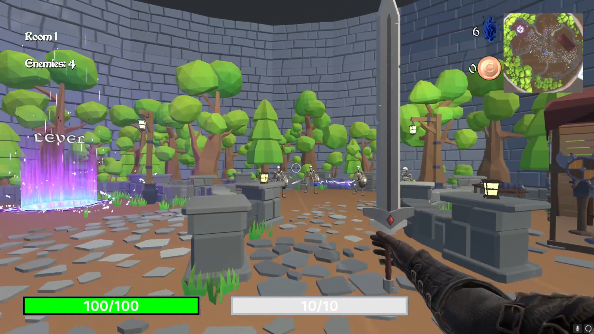

The player's health is constantly drained. The only way to survive is to keep fighting, absorbing life from fallen enemies in an effort to stay alive long enough to kill the grave king ... or join him.
Despite time and scope constraints, I am happy with the result, a fully playable prototype showcasing core mechanics, and a general style/theme of the game.
Video Demo
My Implementation
The central mechanic in Cursed Resurrection is a life-drain system. From the moment the player enters a run, their life begins to deplete at a constant rate. There's no passive regen, the only way to survive is to kill.
Combat was designed to feel satisfying and urgent. Killing enemies drops health orb, while chaining together kills rapidly activates a combo system that increases healing rate rewarding players for dashing into fights rather than taking it slow. At max combo, the player can perform a "glory kill" a cinematic finisher inspired from DOOM that fully restores their health and briefly halts the life-drain, providing a powerful and rewarding moment in the flow of battle.
The game gets progressively harder, from harder/stronger enemies to new enemies and faster life drain.
The game also features a hub area, referred to as the Safe Heaven. Which includes what you'd expect from a roguelike hub. The upgrade system is split into two tracks: temporary upgrades, found or bought during a run, and permanent upgrades, purchased using “Soul Fragments” collected over multiple runs. A common feature in roguelikes providing this "getting stronger" feel.
While procedural generation was conceptually planned, it was ultimately restricted due to course constraints. As a result, the room layout is fixed but would grately benefit from precedural generation. (Check out my Wave Function Collapse if you haven't already!)
As this game was initially made to learn the Unity Engine the biggest problem I faced was Time Constraints, trying to fit what I needed in the given time was quite a challenge and even though I had to cut a lot from the original idea I'm happy with the prototype it turned out to be. I really enjoyed working on this project and wrote at the time an extensive README which I encourage you to check out below!